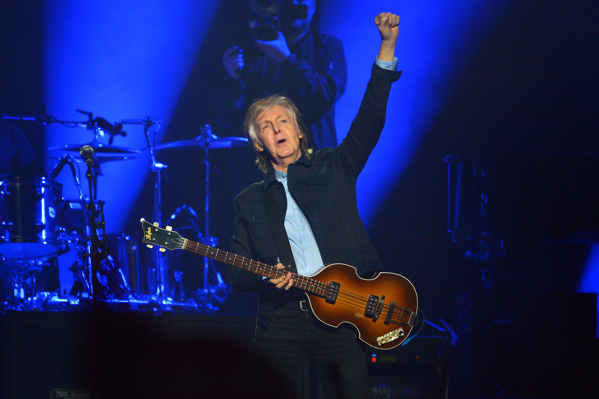

Sir James Paul McCartney

Sir James Paul McCartney (born 18 June 1942) is an English singer, songwriter and musician
who gained worldwide fame as co-lead vocalist, co-songwriter and bassist for the Beatles.
One of the most successful composers and performers of all time,
he is known for his melodic approach to bass-playing, versatile and wide tenor vocal range,
and musical eclecticism, exploring styles ranging from rock 'n' roll, pop to
classical and electronica.
Here's a timeline of Paul Mccartney's astounding life and career:
- Jun 18, 1942 - Paul McCartney is born
- Apr 26, 1953 - His mother died of breast cancer. The incident was the inspiration for The Beatle's most famous song, "Let It Be." (1970)
- Jul 6, 1957 - The Beatles are formed
- May 19, 1962 - The Beatles get signed. Some of their first songs were "Love Me Do" and "Please Please Me".
- May 19, 1964 - Beatlemania Begins. They reached new heights of celebrity in 1964 when they first visited the U.S. and went on the Ed Sullivan Show. People all over the world became crazed by the band.
- Aug 29, 1966 - Last Concert. Their last concert was on the roof of Apple Corps in London. The only eyewitnesses were Apple staff and the film crew, though dozens of people could hear them in the surrounding buildings, and Savile Row below. Even some people were on the roofs of the surronding builidings trying to watch.
- Mar 12, 1969 - First wife. He had met Linda at a club called the Bag ‘O Nails in 1967. She was an American photographer, musician and animal rights activist. He adopted Heather Louise, born of Linda's previous marriage, in 1969. They later had three children together: Mary Anna, Stella Nina, and James Louis. Linda died in 1998 due to breast cancer.
- May 19, 1970 - He released his first solo album in 1970, just before the breakup of The Beatles. He also formed his own band, Wings, which included his wife, Linda. Of the nine albums credited to Wings during the group's life, all went top 10 in either the UK or the US, with five consecutive albums topping the US charts.
- May 19, 1970 - The Beatles breakup
- Dec 30, 1996 - Becoming a knight. At age 54I he was knighted by Queen Elizabeth II at Buckingham Palace in Central London for his "services to music." To this day he's referred to as Sir Paul McCartney.
If you have time, you should read more about this incredible human being on his Wikipedia entry. And don't forget to check out both his and The Beatles incredible music.